CAMMA team meeting · 9 November 2026
Joint Learning of Safety-Relevant Anatomy from Heterogeneous Supervision in Laparoscopic Cholecystectomy
Luc Vedrenne · Shih-Min Yin
Andrea Bella · Pietro Mascagni · Nicolas Padoy
IPCAI 2026 submission · Team update
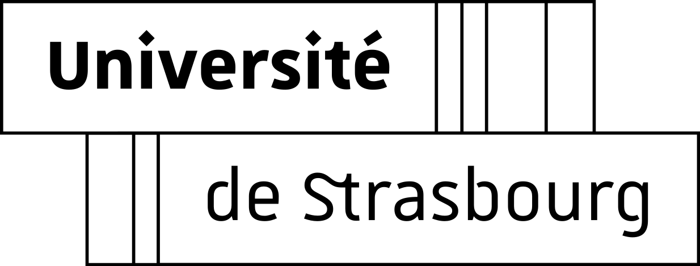
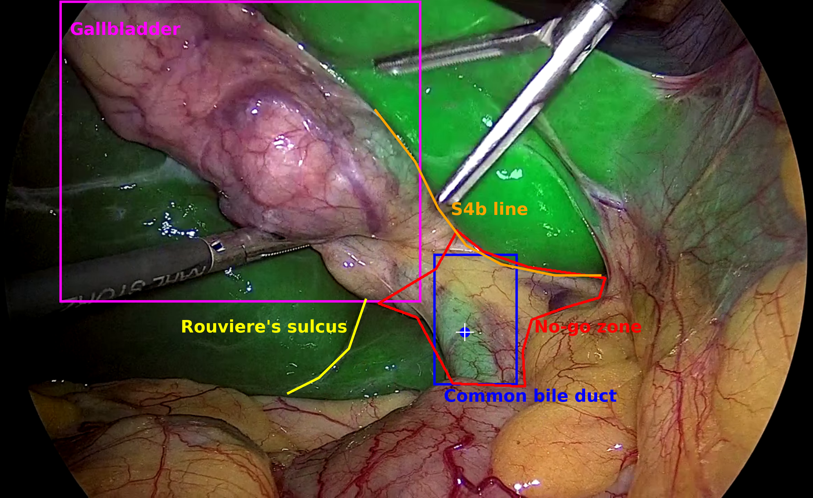
RS: Rouviere’s sulcus
S4b: base of liver segment IVb
Pre-HCT: before triangle dissection → HCT: dissection to cystic-duct transection
2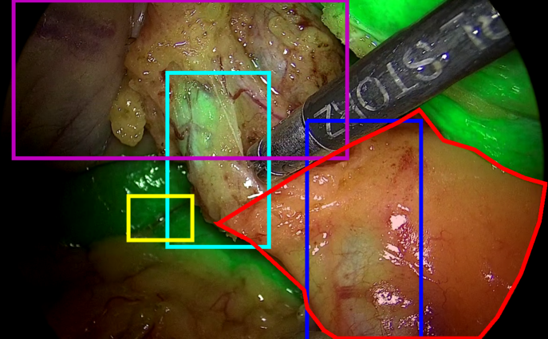
123 videos · one center
ICG-guided procedures
Expert keyframes + regular frames
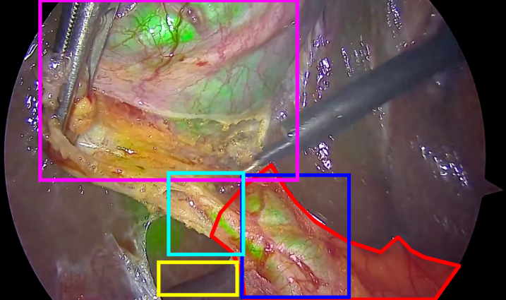
41 videos · two other centers
ICG-guided procedures
Different cameras and ICG protocols
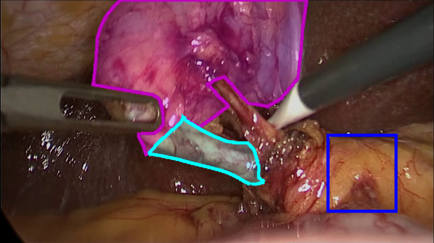
201 videos · white light
Existing GB / CD masks
New expert CBD boxes
New ICG cohorts + extended white-light annotations; all splits are disjoint by video
3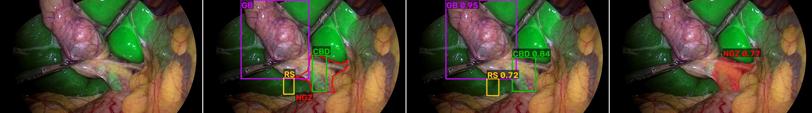
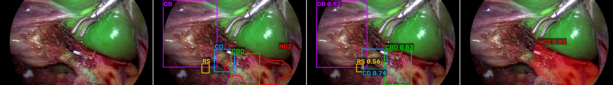
Same video, same patient: exposure and visible anatomy change during dissection.
Clinically relevant views selected by experts.
Systematic coverage across the procedure.
iBSAFE-u / MC: every 5 s in pre-HCT, every 30 s in HCT.
Key and regular iBSAFE frames share the same video cohort; overlaps are deduplicated.
| Source | GB | RS | S4b | CD | CBD | NGZ |
|---|---|---|---|---|---|---|
| iBSAFE key | Box | Box | — | Box | Box | Mask |
| iBSAFE uniform · train | — | Line | Line* | — | Box + point | — |
| iBSAFE uniform · test | Box | Line / box | Line* | Box | Box + point | Mask |
| iBSAFE-MC | Box | Box | — | Box | Box | Mask |
| Endoscapes | Mask | — | — | Mask | Box | — |
Available annotation
Use the supported target and spatial loss.
Missing annotation ≠ reviewed negative
Unknown targets must not become background.
Joint learning does not require every image to carry every annotation type
* S4b lines: pre-HCT only
6All instances of the target have been reviewed.
Example: reviewed CBD boxes in iBSAFE-u.
Annotation is partial or unavailable.
Examples: sparse fluorescence points; no RS labels in Endoscapes.
Exhaustiveness is defined per target and annotation type, not per image.
Surgical frame
+ fixed class names
Pretrained weights frozen
~0.6% trainable parameters
Boxes + spatial masks
NGZ, GB / CD, rasterized RS / S4b lines
Base weights remain frozen, including heads.
Trainable LoRA adapters in the vision / DETR modules and segmentation branch.
Deduplicated iBSAFE + Endoscapes + iBSAFE-MC, sampled in proportion to √N.
Inference uses the image and class names; no phase or fluorescence-evidence labels
8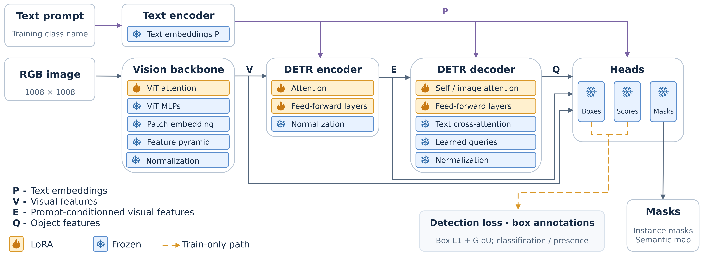
Joint model: base weights stay frozen, including heads. Add mask / point / line losses and LoRA adapters in vision feed-forward layers and the segmentation head / mask MLP.
| Annotation | Training signal |
|---|---|
| Boxes | Classification + L1 + generalized IoU |
| Masks | Focal + Dice losses |
| CBD fluorescence points | Foreground at annotated locations |
| RS / S4b lines | Foreground on the curve; background outside a tolerance band |
L = Lbox + Lmask + Lpoint + 5Lline
Line annotations also supply enclosing boxes. Missing points are not negative targets.
Let z(u) be the predicted mask logit at location u, and p the annotated fluorescence point.
ℓfg penalizes low foreground probability at the annotated point.
The mask branch receives a sparse positive signal; the CBD box supplies complementary localization.
Sample 128 positions along the reference curve C. Dilate its rasterization to form a band B(C).
Encourage foreground at sampled locations.
Discourage off-curve foreground.
The band permits a small spatial tolerance.
5 × 5 dilation: two pixels on each side at predicted-mask resolution.
Curves also supply enclosing boxes; λline = 5.
The curve is not a dense focal / Dice mask target.
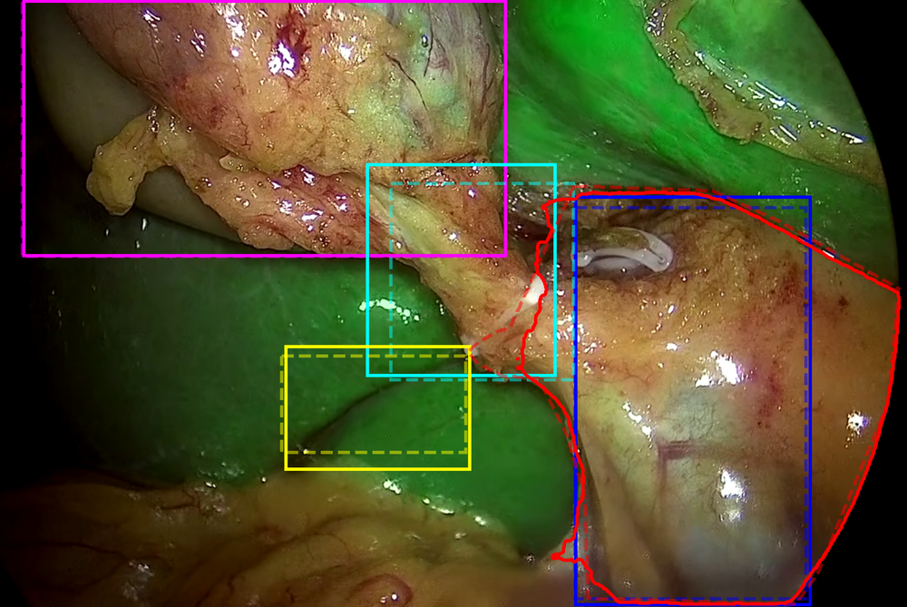
| CBD box AP50 (%) | Score |
|---|---|
| iBSAFE | 80.98 |
| iBSAFE-MC | 79.41 |
| Endoscapes | 50.97 |
All three sources used for training.
Full per-target table in backup.
NGZ delineation and anatomical localization are learned together
132,162 iBSAFE training frames
12,000 updates per model
Identical test sets for both models.
One run per configuration; validation selection uses different target metrics.
CBD-only models · matched 2,162-frame budgets · CBD AP50 (%)
| Training | Key test | Uniform test |
|---|---|---|
| Key | 78.3 ± 1.4 | 72.4 ± 1.8 |
| Uniform | 80.2 ± 1.2 | 76.8 ± 1.3 |
| Combined | 82.0 ± 1.0 | 75.3 ± 1.5 |
Keyframe tests give +3.4 to +6.7 points for the same fitted models.
Uniform training gives +4.4 points on the uniform test versus keyframe training.
Mean ± SD over five subset draws at a fixed training seed; 4,000 updates per fit.
Fixed full joint model · iBSAFE-u test · 199 pre-HCT / 417 HCT frames · scores (%)
| Target | Endpoint | Pre-HCT | HCT |
|---|---|---|---|
| GB | Box AP50 | 94.43 | 90.16 |
| CBD | Box AP50 | 78.11 | 78.41 |
| CD | Box AP50 | — | 60.06 |
| RS | Box AP50 | 22.06 | 29.73 |
| RS | Line F1@5 | 13.84 | 0.00 |
| S4b | Line F1@5 | 27.65 | — |
| NGZ | Mask AP50–95 | 38.87 | 57.22 |
CD AP is undefined in pre-HCT; S4b has no HCT line references.
RS line F1 includes reviewed negatives: 83 / 12 positive pre-HCT / HCT frames.
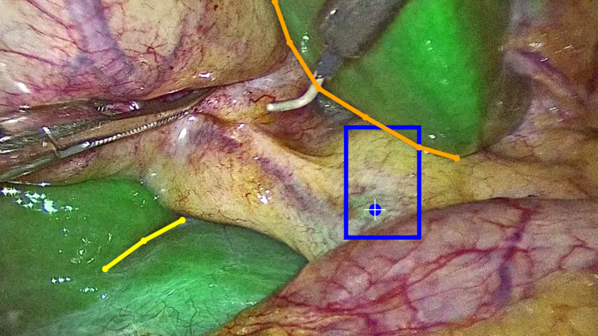
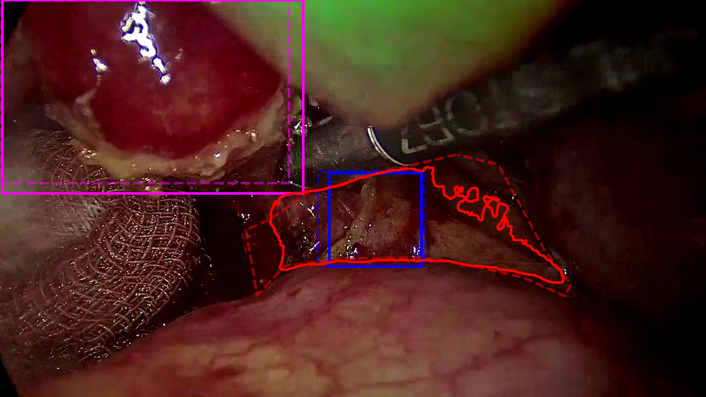
B: iBSAFE · E: Endoscapes
White-light data adds 2.17 points in the weak group.
Groups also differ in CBD prevalence and may differ in phase / exposure.
Local evidence matters for interpretation
17All rows evaluated on the same iBSAFE-MC test set · 31 videos / 1,148 frames
B and B + E
iBSAFE-MC excluded from training and validation.
B + I and B + E + I
MC training cases included;
the same disjoint MC test set.
| Sources | CBD | RS | NGZ |
|---|---|---|---|
| B | 78.15 | 34.11 | 50.50 |
| B + E | 76.05 | 26.41 | 50.28 |
| B + I | 77.60 | 46.91 | 53.24 |
| B + E + I | 79.41 | 39.39 | 52.36 |
B: iBSAFE · E: Endoscapes · I: iBSAFE-MC
CBD / RS: box AP50; NGZ: mask AP50–95 (%)
E has no NGZ labels, but its losses update shared features and its inclusion changes source sampling.
Keep unseen-center transfer separate from evaluation with target-source training data
One trained model per row
18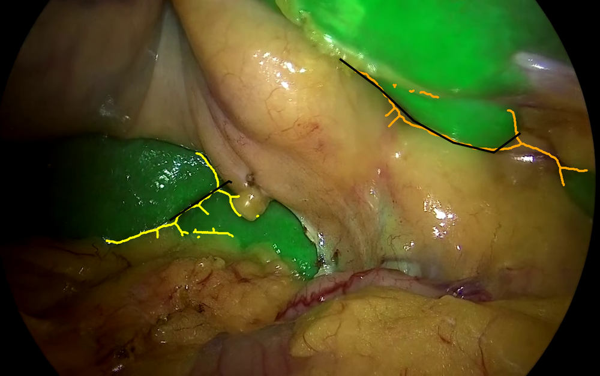
Distances scaled to a 1008-pixel longest edge
19NGZ delineation alongside ducts, context and landmark lines.
Joint supervision generally improves CBD localization.
Sampling, phase, local fluorescence and source composition
all matter when comparing results.
Weak-evidence CBD and precise landmark geometry remain limited.
Aggregate AP does not establish clinical safety.
Possible next steps
How should we represent and constrain RS / S4b
to reduce branches and improve useful boundaries?
Can temporal information or anatomical context
help when the CBD fluorescence cue is weak?
How should we measure missed unsafe regions
and excess NGZ coverage separately?
| Target | Endpoint | iBSAFE | iBSAFE-MC | Endoscapes |
|---|---|---|---|---|
| NGZ | Mask AP50–95 | 58.89 | 52.36 | — |
| GB | Box AP50 | 93.39 | 98.12 | 84.62 |
| CD | Box AP50 | 64.29 | 51.39 | 62.96 |
| CBD | Box AP50 | 80.98 | 79.41 | 50.97 |
| RS | Box AP50 | 33.51 | 39.39 | — |
| RS | Line F1@5 | 10.23 | — | — |
| S4b | Line F1@5 | 27.65 | — | — |
iBSAFE box / mask evaluation: deduplicated key + uniform test frames.
Line evaluation: 616 RS frames; 199 pre-HCT S4b frames. Scores in %.
| Training policy | Frames | Key test | Uniform test |
|---|---|---|---|
| Key | 2,162 | 78.3 ± 1.4 | 72.4 ± 1.8 |
| Uniform | 2,162 | 80.2 ± 1.2 | 76.8 ± 1.3 |
| Combined | 2,162 | 82.0 ± 1.0 | 75.3 ± 1.5 |
| Combined, full | 6,577 | 83.0 | 78.0 |
Matched controls
85 videos; same video × phase counts
Combined: half key / half uniform
4,000 updates; CBD-only training
Variation and selection
First three rows: mean ± SD over 5 subset draws
Fixed training seed; full-data row: one run
Checkpoint: validation CBD box AP50
CBD AP50 (%)
B2| Training phase | Frames | Pre-HCT test | HCT test |
|---|---|---|---|
| Pre-HCT | 866 | 67.87 ± 2.72 | 68.69 ± 1.62 |
| HCT | 866 | 69.22 ± 4.78 | 75.60 ± 0.23 |
| Both, matched | 866 | 71.13 ± 1.44 | 73.93 ± 3.29 |
| Both, full | 3,899 | 75.16 | 82.12 |
Matched runs: same 79 videos and per-video totals; 433 frames per phase in the mixture.
Five subset draws at fixed seed; 4,000 updates; CBD-only models.
Tests: 199 pre-HCT / 417 HCT frames.
Full-data run also changes frame count, video coverage (86 videos) and phase proportions.
CBD AP50 (%); matched rows: mean ± sample SD
B3| Sources | GB | CD | CBD | RS | NGZ |
|---|---|---|---|---|---|
| B | 92.97 | 45.28 | 78.15 | 34.11 | 50.50 |
| B + E | 96.30 | 49.09 | 76.05 | 26.41 | 50.28 |
| B + I | 97.49 | 48.93 | 77.60 | 46.91 | 53.24 |
| B + E + I | 98.12 | 51.39 | 79.41 | 39.39 | 52.36 |
| E + I | 96.17 | 39.23 | 57.12 | 6.06 | 49.21 |
Fixed iBSAFE-MC test set; one model per row.
First two rows: MC excluded from both training and validation.
B: combined iBSAFE · E: Endoscapes · I: iBSAFE-MC
GB / CD / CBD / RS: box AP50; NGZ: mask AP50–95 (%)
| Setting | Full joint model |
|---|---|
| Optimizer | AdamW; peak LR 10⁻⁴ |
| Schedule | 240 warm-up; cosine decay |
| Updates / batch | 12,000 / 8 images |
| Input | Letterbox to 1008 × 1008 |
| LoRA | r = 16; α = 32; dropout 0.1 |
| Precision / seed | BF16 / 42 |
Every 250 updates; no early stopping.
Joint: validation NGZ mask AP50.
Full model: unweighted mean over B and I.
CBD-only: validation CBD box AP50.
No official test data used for selection.
P(source) ∝ √N
B: 6,577 → 60.70%
E: 1,176 → 25.67%
I: 332 → 13.64%
Distances scaled to a longest image edge of 1008 px. Reviewed negative frames are retained.
| Subset | Split | Videos | Pre-HCT | HCT | Total |
|---|---|---|---|---|---|
| iBSAFE key | Train + val | 108 | 323 | 3,087 | 3,410 |
| iBSAFE key | Test | 15 | 59 | 405 | 464 |
| iBSAFE uniform | Train + val | 108 | 1,190 | 3,705 | 4,895 |
| iBSAFE uniform | Test | 15 | 199 | 417 | 616 |
| Endoscapes | Train / val / test | 120 / 41 / 40 | 0 | 1,176 / 367 / 338 | 1,176 / 367 / 338 |
| iBSAFE-MC | Train + val | 10 | 111 | 350 | 461 |
| iBSAFE-MC | Test | 31 | 336 | 811 | 1,148* |
Key / uniform share the iBSAFE cohort; overlapping frames are deduplicated when pooled.
* MC includes one test frame with unknown phase. Inventory counts include validation;
optimization-frame counts exclude it.